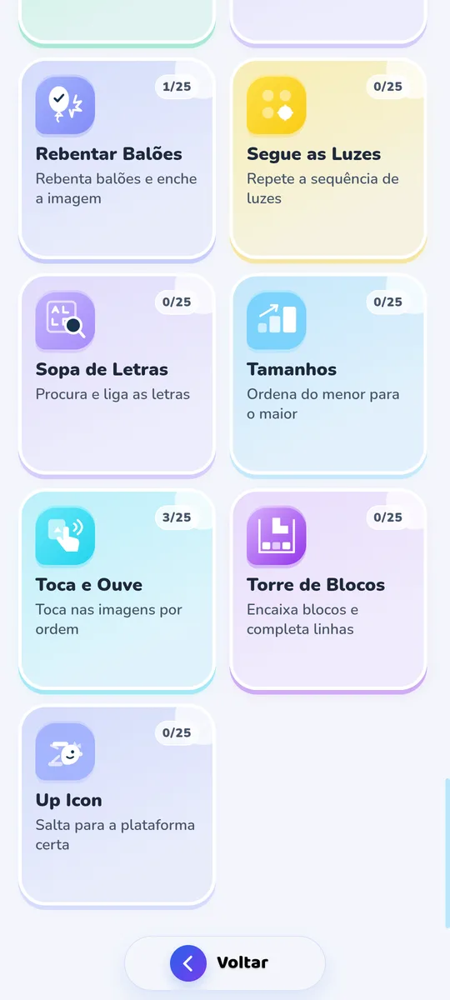
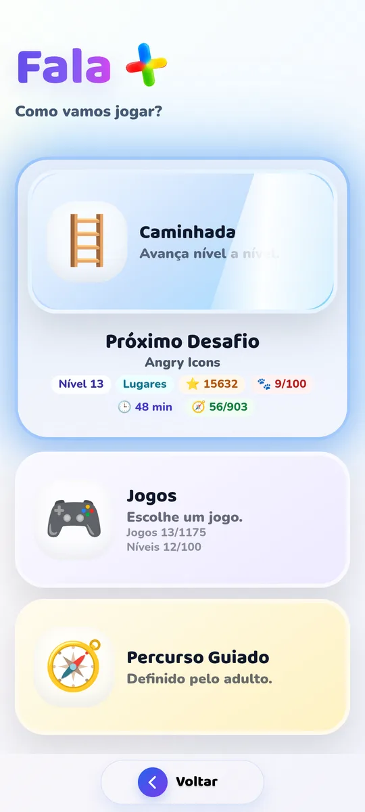

Imagens, palavras e voz ajudam a transformar uma intenção numa mensagem partilhável.
Resultado a acompanharPedidos · escolhas · frases construídasComunicação, aprendizagem e brincadeira
Dar voz às pequenas grandes descobertas.
A Fala+ reúne imagens, voz, jogos e percursos para tornar cada tentativa de comunicar numa oportunidade de participar.
Para famílias, terapeutas da fala e educadores · Android


ComunicarEscolhas com significado
AprenderJogos que convidam a voltar
BrincarDescobrir sem pressão
O que muda no dia a dia
Resultados que se sentem
em cada momento.
A app é uma ferramenta complementar para criar oportunidades de comunicação — em casa, na escola e entre sessões.
Atividades simples para fazer em conjunto, sem transformar cada momento num teste.
Um percurso que permite retomar, repetir e celebrar pequenas conquistas.
Espaço para escolher, explorar e encontrar diferentes formas de dizer.
Veja antes de experimentar
Uma app que se percebe
ao primeiro toque.
Comunicar, jogar, ouvir e acompanhar: uma experiência pensada para ser simples para a criança e útil para o adulto.
Quero ver mais ↗ Demonstração real da Fala+ Bolhas de Sabão
Uma experiência completa
Quatro formas de
avançar juntos.
Comunicar
Escolher imagens, construir mensagens e ouvi-las em voz alta.
Explorar
Descobrir palavras, sons, cores e temas familiares.
Jogar
Praticar atenção, memória e vocabulário através da brincadeira.
Acompanhar
Ver percursos, progresso e preferências na Área Adulto.
Uma app para uma rede inteira
Quando os adultos
trabalham em conjunto.
A Fala+ pode aproximar famílias, terapeutas e escolas em torno de experiências de comunicação mais consistentes.
Falar sobre uma parceriaFamíliasCasa
TerapeutasSessões
EducadoresEscola
Fala+
Uma forma simples de começar
Escolha o ritmo.
Continue quando fizer sentido.
Apresente aqui os planos e condições reais quando estiverem definidos na Google Play.
Para começar
Gratuito
Descobrir sem compromisso- Comunicar sem limites
- Atividades selecionadas
- Sem publicidade
Para continuar
Premium
Mais jogos, mais caminhos- Catálogo completo de atividades
- Percursos e acompanhamento
- Perfis e ferramentas para o adulto
RASCUNHO · Preços, métricas e condições finais devem ser confirmados antes da publicação.
Conhecimento para acompanhar
Leia, compreenda,
leve para o dia a dia.
Artigos escritos para famílias, terapeutas e educadores: fala, linguagem, brincar e comunicação sem promessas exageradas.
Explorar todos os artigos ↗Fala+ · Pequenas descobertas. Mais comunicação.